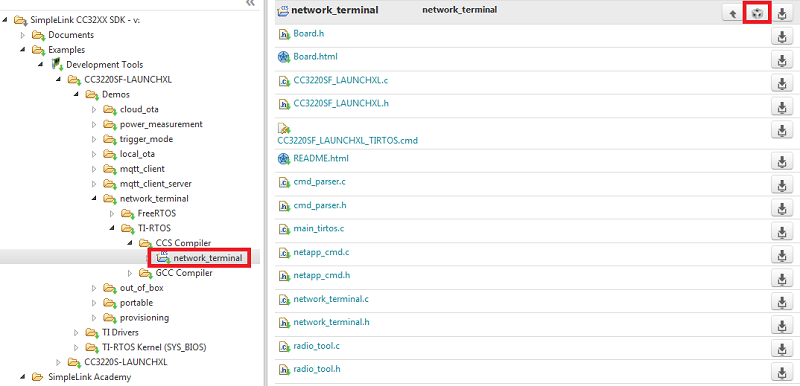
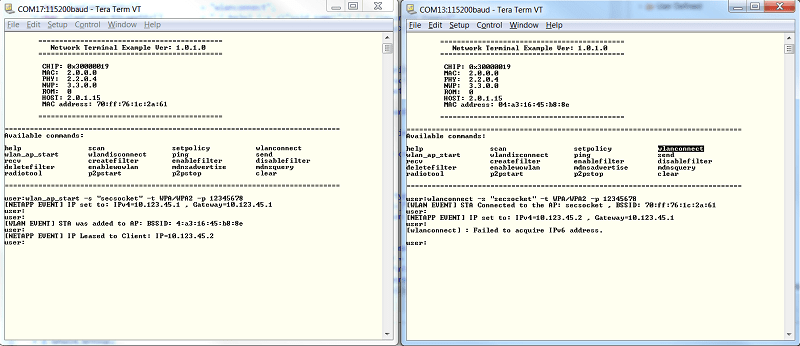
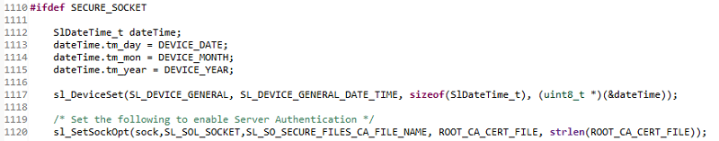

Introduction
IoT devices are becoming more common in data sensitive applications such as medical monitoring. Such devices are exposed to the following types of attack vectors: internet, LAN, and physical access. The SimpleLink™ Wi-Fi® CC3x20 device family offers security features which mitigate vulnerability from these attack vectors. These security features include: secure file system, secure socket, secure http server, secure content delivery, and secure manufacturing.
Vulnerabilities of IoT Devices
IoT devices are typically connected to the internet and often provide access to personal/sensitive information. Some common attack vectors include:
- Internet Network Connectivity Vector: The vulnerabilities in this vector could come from all communication channels (ex. sockets) and protocols in use. In general, these attacks target all the resources and information that pass through these communication channels.
- Local Network Connectivity Vector: This attack vector is similar to the internet network connectivity vector but with a much narrower geographical scope. The attackers could attempt to breach security with attacks that are based on monitoring the traffic of the wireless network. Monitoring a wireless network is fairly easy, and even in secured wireless networks some of the frame headers are not encrypted.
- Physical Access (Operation): The operation vector refers to attacks that enable the hacker to control the operation of the device by using the interfaces that the final product offers (ex. power line, buttons, etc.).
- Physical Access (PCB Manipulation): The manipulation vector relates to the ability of the hacker to have access to the actual board allowing an individual to monitor the lines and interfaces or even manipulate wires.
SimpleLink Security Features
In addition to the secure sockets, SimpleLink Wi-Fi includes the following security features:
- Secure Networking: Ensures the authenticity, reliability, and confidentiality of data flow between peers over the network
- Wi-Fi Security: The Wi-Fi layer of the device supports security to ensure the integrity and confidentiality of L2 transaction frames between AP and station, or between two peers in Wi-Fi Direct mode
- Secure File System: File system security for confidentiality and integrity of data (including: authentication and integratity verification, content encryption, cloning protection, failsafe update mechanism, factory image recovery)
- Secure Content Delivery: This capability enables the exchange of confidential content to the device and provides another level of security at the application-layer
- Crypto Utilities: The SimpleLink device exposes a set of crypto primitives to aid in some common cryptographic related operations
- Hardware Crypto Engine: The CC3220 microcontroller includes a set of hardware crypto engines such as CRC, AES, DES and SHA/MD5, known as DTHE (Data Transformation and Hash Engine), to enhance the performance of applications that require custom application level security
Prerequisites
Completed Material
- SimpleLink Wi-Fi CC3220 Getting Started Guide
- CC3220 Project Zero: Getting Started with the Network Terminal Example
Software
- Code Composer Studio v7.4 or later
- Must have SimpleLink CC3xxx Wireless support
- Make sure that CCS is using the latest updates: Help → Check for Updates
- CC3220 SDK v1.60.00.04 or later
- UniFlash v4.2.1.15 or later.
- Terminal emulator program such as TeraTerm or PuTTY
Hardware
- 2x CC3220S or CC3220SF LaunchPads (CC3220S-LAUNCHXL or CC3220SF-LAUNCHXL)
- 2x Micro-USB cable (included with LaunchPad/BoosterPack)
- 802.11b/g/n (2.4-GHz) Wireless Access Point (AP)
Secure Socket Overview
SimpleLink supports sockets through BSD API. Secured sockets use TLS or SSL chryptographic protocols. For simplicity, the TLS/SSL protocol is embedded in the BSD layer.
TLS/SSL (Transport Layer Security)
- Most widely used security protocol in the Internet
- Operates over the TCP transport layer
- Uses asymmetric cryptography for authentication and key exchange, symmetric encryption for data confidentiality, and message authentication codes for message integrity.
TLS uses combinations of ciphers lumped into a cipher suite.
The following shows the TLS/SSL negotiation sequence:
The TLS Authentication is depicted below:
- Connection Succeed: Valid chain, Root-certificate installed and exists in root-certificate catalog
- Certificate Failed: Invalid chain, Certificate from the chain exists in revocation list
- Warning: All the rest
API
The API of secure and unsecure TCP sockets is very similar. Most of the security parameters are defined through SetSockOpt. An example is below.
| TCP | Secure |
|---|---|
sl_Socket(SL_AF_INET, SL_SOCK_STREAM, 0); |
sl_Socket(SL_AF_INET, SL_SOCK_STREAM, SL_SEC_SOCKET); |
sl_SetSockOpt(sd, SL_SOL_SOCKET, SL_SO_SECURE_FILES_CA_FILE_NAME, "dummy-trusted-cert", strlen("dummy-trusted-cert")); |
Task 1: Testing unsecured TCP socket
The following section will discuss the steps needed to run an unsecure TCP socket connection on the CC3220 LaunchPad. This example is based on the Network Terminal example project found within the CC3220 SDK which demonstrates a range of networking capabilities. We will focus on TCP sockets. We will run the Network Terminal on two devices; one will serve as the TCP server and the other will be the client.
Prior knowledge
These instructions assume that you have previous experience with the SDK and the UniFlash ImageCreator tool. Please refer to the SimpleLink Wi-Fi CC3220 Getting Started Guide for more information.
In CCS, open the TI Resource Explorer: View → Resource Explorer
Expand the folders as shown to select the network_terminal example, then click the Import to IDE icon at the top-right
- Be sure you select your desired project "flavor" (CC3220S-LAUNCHXL, CC3220SF-LAUNCHXL, TI-RTOS, Free-RTOS, CCS, GCC, etc.)
We will be using the TI-RTOS CCS example for this lab:
network_terminal_CC3220SF_LAUNCHXL_tirtos_ccs
Build the project. Using UniFlash ImageCreator, program the application onto two SimpleLink devices.
Using UniFlash ImageCreator
For UniFlash ImageCreator instructions, see section 2.4 of the SimpleLink Wi-Fi CC3220 Getting Started Guide.
Open two terminal emulators and connect to both devices. We want to use the XSD110 Class Application/User UART port with the following parameters:
UART Configuration
Baud rate: 115200
Data: 8 bit
Parity: None
Stop: 1 bit
Flow control: NoneRestart both LaunchPads to trigger the TCP Client-Server demo. First we will setup the wireless connection from the terminal.
- Device A will serve as the access point. Use the following command:
wlan_ap_start -s "secsocket" -t WPA/WPA2 -p "12345678" - Device B will serve as station and connect to the access point. Use the following command:
wlanconnect -s "secsocket" -t WPA/WPA2 -p "12345678"
- Device A will serve as the access point. Use the following command:
Now that the devices are wirelessly (L2) connected and each has its own IP address, we can initiate the TCP stream.
- Device A will serve as the TCP server and wait on port 5001. Use the following command:
recv -p 5001 - Device B will serve as the TCP client connecting to the server (it will use the gateway IP for the connection). Use the following command:
send -c 10.123.45.1 -p 5001
- Device A will serve as the TCP server and wait on port 5001. Use the following command:
Make sure the connection is completed successfully (i.e. 1000 packets of 1400 bytes were received by the server).
Task 2: Adding security to the TCP socket
In this task, we will enable the a secured socket layer using the SSL and TLS protocols. The relevant code is the implementation of TCPClient() and TCPServer() in socket_cmd.c.
This example uses the dummy "playground" certificate. Make sure the Playground Catalog is programmed as the Trusted Root-Certificate Catalog and that the following playground certificates are included in the User files programmed to the device with UniFlash ImageCreator.
dummy-root-ca-cert: root certificate.dummy-trusted-ca-cert: intermidiate ca trusted.dummy-trusted-cert: trusted certificate.dummy-trusted-cert-key: private key of the trusted certificate.trusted-chain.pem: trusted chain (contains the dummy-trusted-ca-cert and the dummy-trusted-cert together)
In order to use secure sockets, uncomment the SECURE_SOCKET define in
socket_cmd.c.The client needs to have the date correctly configured in order to validate the server's trusted chain. Update this section of code in
socket_cmd.c.After the socket is created, the client should set the server's root CA in order to perform Server Authentication. This is done for you in
TCPClient()insocket_cmd.c.The server should set the trusted chain and its private key which are used during server verification. This is done for you in
TCPServer()insocket_cmd.c.Rebuild the project and flash it to both devices. Then repeat the Task 1 steps to test the connection.
Troubleshoot
In case of any issue, you may troubleshoot the error using Chapter 7: Secure Socket of the CC3x20 Network Processor Programmer's Guide
Task 3: Adding Client Verification
Some servers may demand a client verification. In such cases, the client will typically create a certificate pair (private and public pair) which will be signed by the server. Upon request, the client will send its certificate (or chain) to be verified by the server. In our example, we will use the playground chain for both the server and the client verification. We will add the client verification code on top of the Task 2 code.
To enable client authentication, uncomment the CLIENT_AUTHENTICATION define in
socket_cmd.c.The server should configure today's date in order to validate the server's trusted chain. It will also set the root CA certificate that was used to sign the client certificate. This is done for you in
TCPServer()insocket_cmd.c.The client needs to install both the certificate chain and private key. This is done for you in
TCPClient()insocket_cmd.c.Rebuild the project and flash it to both devices to test the socket connection.
Want to test the security?
Try the same tasks, but reflash one of the LaunchPads without the certificate keys we used. It should fail!
References
- CC3x20 Network Processor Programmer's Guide Chapter 7: Secure Socket
This work is licensed under a Creative Commons Attribution-NonCommercial-NoDerivatives 4.0 International License.